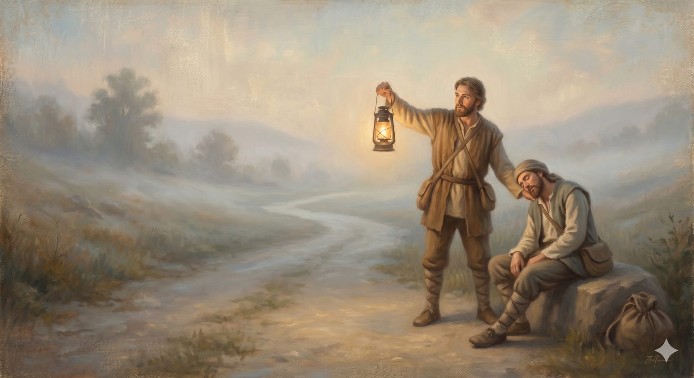

The Watchman's Warning
A study in staying spiritually awake — the slow drift, presumption, and respectable sins, with the mercy that calls the drifting pilgrim home.
"...I have made you a watchman... whenever you hear a word from my mouth, you shall give them warning from me." Ezekiel 3:17 (ESV)
Of all the dangerous country on the road, the shepherds warned most urgently about this stretch — and it is the one that looks least dangerous of all. The Enchanted Ground is pleasant. The path is level, the air is soft and warm, and that very air carries a drowsiness that steals over a pilgrim until the most reasonable thing in the world seems to be to sit down, just for a moment, and close one's eyes. Pilgrims have died here — not from a cliff or a giant, but from falling asleep and never waking. This study is the watchman posted against that sleep.
It is, of all the companions on this road, the least comfortable — written, as it says of itself, with something nearer grief than accusation, a lump in the throat rather than a pointed finger. The threat here is not dramatic sin but the slow drift: the quiet cooling of a love once warm, the respectable sins we have made our peace with, the presumption that assumes all is well because nothing has obviously gone wrong. These twelve studies are the watchman's slow, honest work of staying awake to it — and they end, every one of them, not in despair but in the open door of return.
Before you begin — a word on the spirit of this study
This warning is an act of love, not accusation. It is written for the drifting, not to crush the faithful — and if it ever produces fear rather than honest self-examination, the right response is to set it down, talk to a pastor or a mature friend, and remember that the goal is repentance and rest, never panic. Read it slowly. Let it wake you gently.
No one decides to fall asleep here. The soul cools by degrees, no single one of which feels alarming — which is exactly why a watchman is a gift.
The twelve studies, in order:
The Call & the Map
The Anatomy of Drift
Pride: The Parent Sin
The sin that thinks it is not sinning
Open study 3The Art of Self-Deception
How we hide from ourselves — and from God
Open study 4Respectable Sins
The sins that no one confronts because everyone shares them
Open study 5The Slow Drift
How we drift without ever deciding to
Open study 6Two Ways to Lose the Gospel
The Hardening, and the Hope
Presumption and the Hardening Heart
A warning we must not sleep through
Open study 9The Unpardonable Sin
A warning and a mercy
Open study 10Assurance, Fruit, and Where to Look
The most pastorally complex question in this study
Open study 11No Longer Slaves
The hope that is not wishful thinking
Open study 12Begin with the watchman's call, and read at the pace of honest reflection.